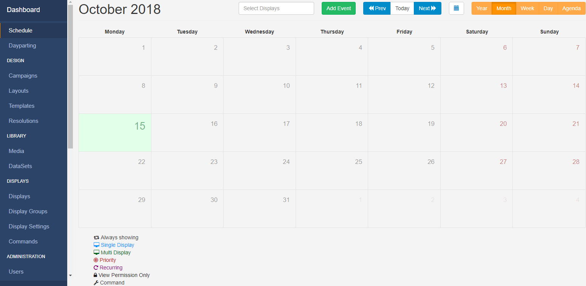

Scheduling
SFC Technology has a sophisticated scheduling system which allows for the simple creation of complex schedules for Events across Displays/Display Groups.
Events
Events are administered from the Schedule section of the menu and managed from the calendar interface.

The CMS supports scheduling for 3 event types:
-
Campaign/Layout Event
Schedule 1 or multiple Events to Displays.
-
Overlay Layout Event
Specially created Layouts are scheduled at the same time as existing Layouts to create an overlay of content to be displayed.
-
Command Event
A Scheduled Command can be executed by the Player at a specific point in time and therefore this type of event does not need a
toDt.
Commands available to schedule are pre-configured by an Administrator. Available Commands can be selected using the Command drop-down menu on the Schedule Event form. If you require additional commands please contact your Administrator.
Display Order and Priority are irrelevant when it comes to executing the Command, but may be set in the CMS for organisational purposes.
Schedule Events
Events are scheduled into Dayparts which are selected to schedule within the selected period:
Custom Daypart
Create your own To/From dates and times.
Always Daypart
Select to have the event run constantly.
Create your own defined Dayparts for ease of scheduling.
Priority
Use Event Priority to determine whether the event should be included in the schedule for the Player or not. A 'Priority Event' is determined by a number, with 0 considered the lowest Priority.
If a Player has a schedule containing Events which are all Priority 0, then all of the Events will be shown in rotation together.
If 1 of the Events has a Priority of 1, then this will be the only Event shown.
If there are some Events with Priority 0, some with Priority 1 and some with Priority 2 only the Priority 2 Events will be shown, in a rotation for that Scheduled period (as the highest Priority)
A good example to use Priority would be in a way to alter the Schedule at a specific time, for example, a normal rotation during the day with a Priority Event at lunchtime which shows specific ‘lunch’ information (i.e. Lunchtime specials on a cafe menu).